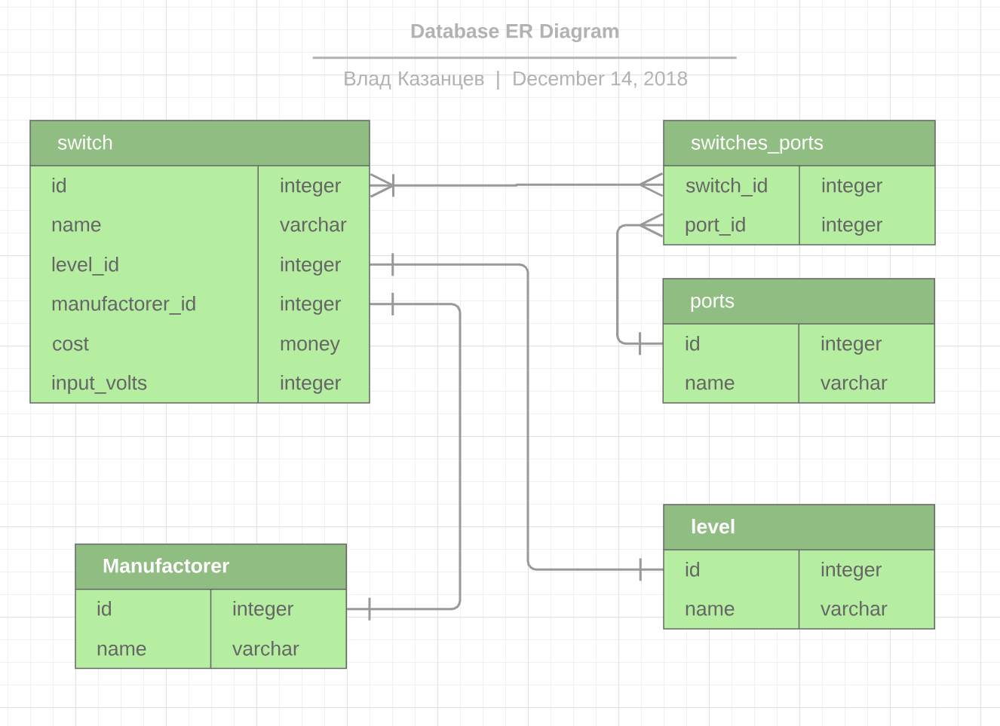

Онлайн версия доступна по ссылке
Для моделирования схемы был найден в интернете инструмент онлайн рисования диаграм lucidchart. Была нарисована схема связей: 
По скольку бесплатных инструментов для рисования и генерация из схемы в SQL DDL не было найдено для PostgreSQL то было принято решения вручную написать все sql файлы описывающие таблицы(дополнительная практика не помешает):
Опишем в файле postgres/migration/2-schema.sql схему:
CREATE TABLE ports(
id SERIAL PRIMARY KEY,
name VARCHAR(50) UNIQUE NOT NULL
);CREATE TABLE levels(
id SERIAL PRIMARY KEY,
name VARCHAR(50) UNIQUE NOT NULL
);CREATE TABLE manufactorers(
id SERIAL PRIMARY KEY,
name VARCHAR(50) UNIQUE NOT NULL
);CREATE TABLE switches(
id SERIAL PRIMARY KEY,
name VARCHAR(250) UNIQUE NOT NULL,
level_id INTEGER NOT NULL REFERENCES levels(id),
manufactorer_id INTEGER NOT NULL REFERENCES manufactorers(id),
costs MONEY NOT NULL,
input_volts INTEGER NOT NULL,
info VARCHAR(1000) NOT NULL
);CREATE TABLE switches_ports(
switch_id INTEGER NOT NULL REFERENCES switches(id),
port_id INTEGER NOT NULL REFERENCES ports(id)
);Для удобства использования создадим представление запроса, так называемый "view": Опишем в файле postgres/migration/3-catalog.sql схему:
CREATE VIEW catalog AS
SELECT
id,
(SELECT name FROM manufactorers WHERE id = s.id) AS manufactorer,
(SELECT name FROM levels WHERE id = s.id) AS level,
name AS model,
(SELECT COUNT(1) FROM switches_ports WHERE id = switch_id AND port_id = 1) AS "10Gigabit Ethernet",
(SELECT COUNT(1) FROM switches_ports WHERE id = switch_id AND port_id = 2) AS "Gigabit Ethernet",
(SELECT COUNT(1) FROM switches_ports WHERE id = switch_id AND port_id = 3) AS "Fast Ethernet",
(SELECT COUNT(1) FROM switches_ports WHERE id = switch_id AND port_id = 4) AS "SFP",
(SELECT COUNT(1) FROM switches_ports WHERE id = switch_id AND port_id = 5) AS "SFP+",
(SELECT COUNT(1) FROM switches_ports WHERE id = switch_id AND port_id = 6) AS "комбинированный",
(SELECT COUNT(1) FROM switches_ports WHERE id = switch_id AND port_id = 7) AS "USB",
(SELECT COUNT(1) FROM switches_ports WHERE id = switch_id AND port_id = 8) AS "microUSB",
(SELECT COUNT(1) FROM switches_ports WHERE id = switch_id AND port_id = 9) AS "RS-232",
(SELECT COUNT(1) FROM switches_ports WHERE id = switch_id AND port_id = 10) AS "UART",
(SELECT COUNT(1) FROM switches_ports WHERE id = switch_id AND port_id = 11) AS "последовательный порт консоли RJ-45",
(SELECT COUNT(1) FROM switches_ports WHERE id = switch_id AND port_id = 12) AS "порт RJ-45 для внешнего управления",
(SELECT COUNT(1) FROM switches_ports WHERE id = switch_id AND port_id = 13) AS "слот модуля стекирования",
costs,
input_volts,
info
FROM switches s;